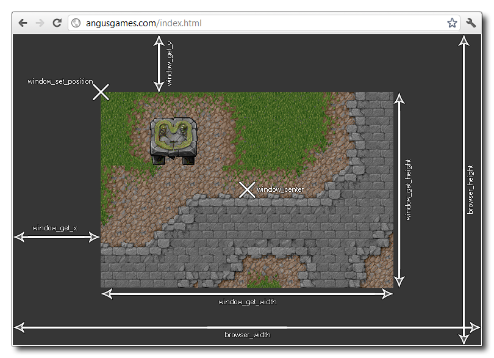

El juego que creas sucede en una ventana (incluso cuando está en pantalla completa) y esta ventana tiene varias propiedades, como posición, tamaño, si es pantalla completa, etc. Estos detalles normalmente se configuran automáticamente en función del tamaño de la habitación y ver puertos habilitados, o desde la pestaña de Windows de Global Game Options, pero puede cambiarlos durante el juego usando las funciones enumeradas en esta página.
La siguiente imagen ilustra cómo todas las funciones de Windows más generales se relacionan e interactúan entre sí:  Las siguientes funciones existen para cambiar y obtener propiedades de la ventana del juego:
- window_center
- window_handle
- window_get_caption
- window_get_colour
- window_get_fullscreen
- window_get_height
- window_get_width
- window_get_x
- window_get_y
- window_get_cursor
- window_get_visible_rects
- window_mouse_get_x
- window_mouse_get_y
- window_mouse_set
- window_set_caption
- window_set_colour
- window_set_fullscreen
- window_set_position
- window_set_size
- window_set_rectangle
- window_set_cursor
- window_set_min_width
- window_set_max_width
- window_set_min_height
- window_set_max_height
- window_has_focus
- window_device
- window_view_mouse_get_x
- window_view_mouse_get_y
- window_views_mouse_get_x
- window_views_mouse_get_y